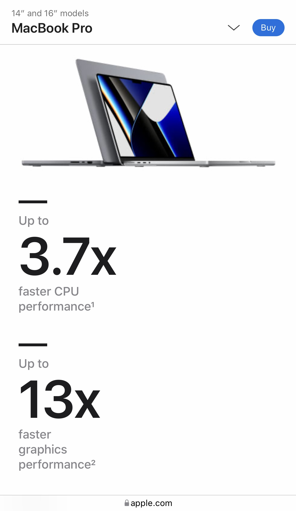

Visual Hierarchy
Adobe
adobe.comVisual Hiearchy is established by placing information that is most effective or valuable to the visitor atarting at the top of the page. In this case, an image that shows what adobe is capable of doing and information to get people to sign up for a free trial.
Fitt's Law
Amazon
amazon.comFitt's law is related to the distance that is required to make a certain action. In this Amazon purchase page, we can see that the checkout button is very close to the product's picture and is at the very top. This makes it more likely for users to make an actual purchase. Or maybe even buy multiple of them.
White Space and Clean Design
Apple
apple.com Developers at Apple are geniuses at wed design. We can obviously see that there are lots of white spaces but it doesn't look like the space is wasted. That I think is because its only showing what is necessary at that point, just a picture, numbers, simple text. Making it easy for any user to digest what's going on.